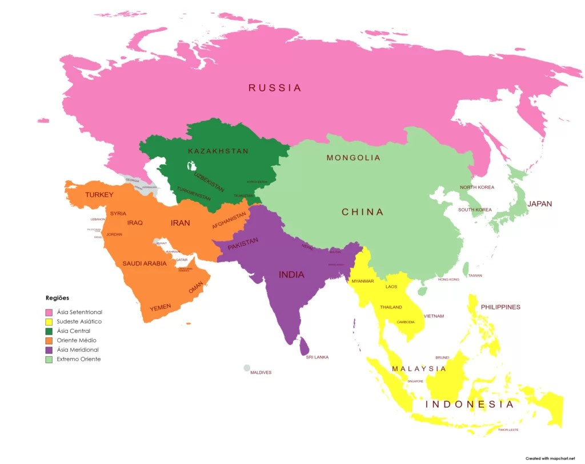

üåè Contextualiza√ß√£o: √Åsia Central e Sul
A Ásia Central e a Ásia do Sul formam duas sub-regiões do continente asiático com características geográficas, culturais e históricas bastante distintas, mas igualmente ricas e importantes.
üèîÔ∏è √Åsia Central
A Ásia Central é composta por cinco países: Cazaquistão, Uzbequistão, Turcomenistão, Quirguistão e Tajiquistão. Localizada no coração do continente asiático, essa região é conhecida por suas paisagens áridas e montanhosas, herança da antiga Rota da Seda que ligava o Oriente ao Ocidente. Durante o século XX, os países da Ásia Central fizeram parte da União Soviética, o que influenciou fortemente sua política, economia e estrutura social. Hoje, a região enfrenta desafios ambientais graves, como a desertificação e a crise do Mar de Aral, além de questões relacionadas à exploração de recursos naturais como gás e petróleo.
üåæ √Åsia do Sul
A Ásia do Sul inclui países como Índia, Paquistão, Bangladesh, Nepal, Sri Lanka, Butão e Maldivas. É uma das regiões mais populosas e culturalmente diversas do mundo. A Índia, por exemplo, é uma potência emergente com grande influência política, econômica e tecnológica. A região é marcada por contrastes: avanços tecnológicos e crescimento urbano coexistem com pobreza, desigualdade social e desafios ambientais, como a poluição do ar e o estresse hídrico. Além disso, a Ásia do Sul possui grande importância histórica, sendo o berço de religiões como o hinduísmo e o budismo.
üåê Import√¢ncia Estrat√©gica
Ambas as regiões ocupam posições estratégicas geopolíticas e econômicas. A Ásia Central é uma ponte entre a Europa e o Oriente, rica em energia. A Ásia do Sul, por sua vez, representa um dos maiores mercados consumidores do planeta e é central em debates sobre desenvolvimento sustentável.